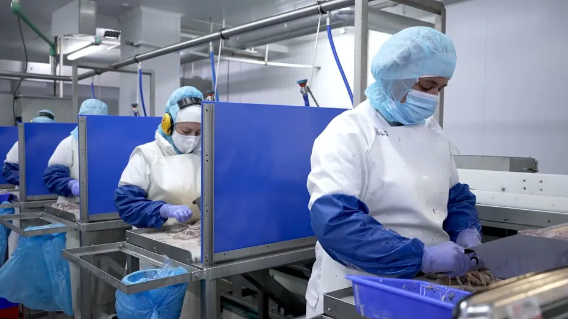
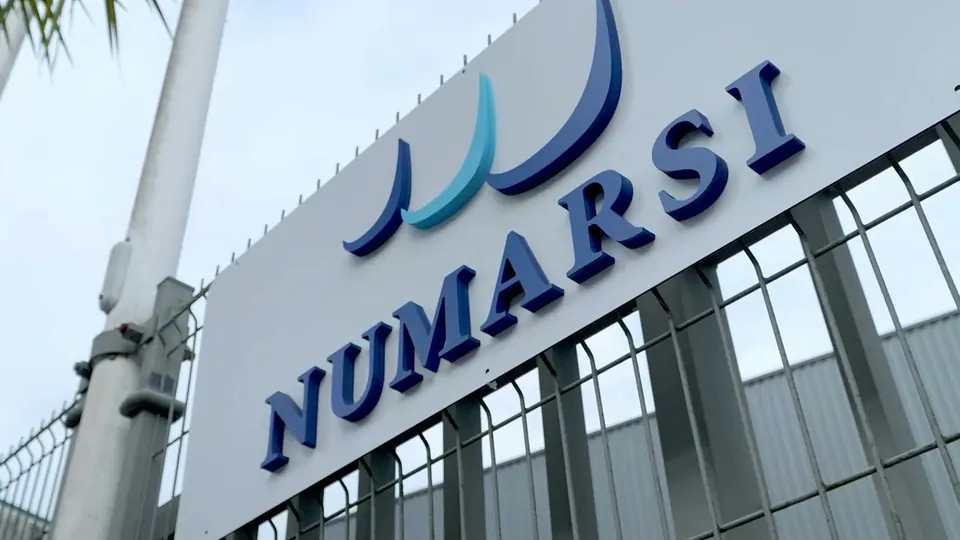

Instalaciones
Instalaciones pensadas para un servicio de calidad
Nuestras instalaciones y equipos están pensados para ofrecer servicios de calidad que respondan a las necesidades del consumidor y a las tendencias del mercado.
- 2011año de fundación
- 2plantas en Pontevedra
- 3.500 m²de superficie total
- +180personas en el equipo
- 4 t/hde capacidad de congelación IQF
Líneas y equipos
- Fileteado y pelado de pescado
- Línea específica de cefalópodo
- Porcionado automático desde bloque
- 2 túneles de congelación IQF y 2 de secado
- Salas refrigeradas para tratamientos y almacenamiento
- Líneas de envasado con pesadora multicabezal
Un recorrido por la planta






¿Hablamos de tu producción?
Cuéntanos qué necesitas y te proponemos cómo hacerlo.